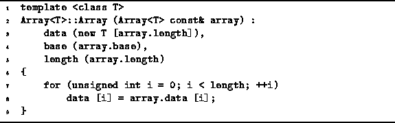
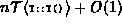
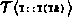
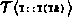
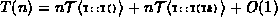
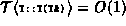
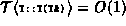

Data Structures and Algorithms
with Object-Oriented Design Patterns in C++
Data Structures and Algorithms
with Object-Oriented Design Patterns in C++Copy constructors play a crucial rôle in C++ programs. For example, the copy constructor is called automatically by the compiler to pass the value of an actual parameter used in a function call to the formal parameter used in the function definition. Similarly, the copy constructor is called automatically by the compiler to pass the return value from a function back to the caller.
Program  shows a simple,
though perhaps somewhat naıve implementation for the
copy constructor of Array<T> class objects.
To determine its running time,
we need to consider carefully the execution of this function.
shows a simple,
though perhaps somewhat naıve implementation for the
copy constructor of Array<T> class objects.
To determine its running time,
we need to consider carefully the execution of this function.

Program: Array<T> Class Copy Constructor Definition
First, the required amount of memory is allocated by operator new. As discussed above, this involves finding space in the heap, which we assume takes constant time; and then initializing the elements of the array using the default constructor for objects of type T, which takes . Next, the length field is set to the correct value, which takes constant time.
Finally, the body of the Array<T> constructor
is a loop which copies one-by-one
the elements of the input array to the newly allocated array.
How this copy will actually be done depends on the type T.
We shall assume that the running time of this assignment
is the same as that of the copy constructor
for objects of type T. Then, the running time of the main loop of the Array<T> constructor
is
Then, the running time of the main loop of the Array<T> constructor
is  where  is the time taken by the copy constructor
for objects of type T.
where  is the time taken by the copy constructor
for objects of type T.
Altogether, the running time of the copy constructor for Array<T> is
,
where n is the size of the array being copied.
In the case where T is one of the built-in types,
 and ,
which gives the simple and obvious result, T(n)=O(n).
and ,
which gives the simple and obvious result, T(n)=O(n).
 Copyright © 1997 by Bruno R. Preiss, P.Eng. All rights reserved.
Copyright © 1997 by Bruno R. Preiss, P.Eng. All rights reserved.